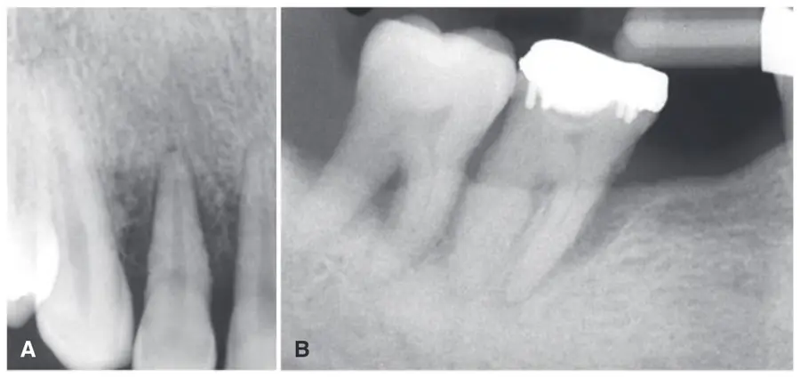
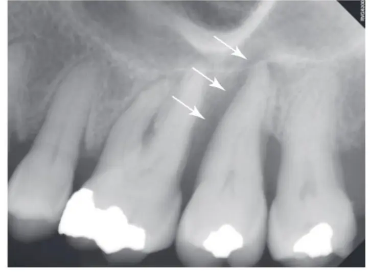

نسخه استخراجشده؛ ترجمه یا تأیید علمی انجام نشده است. وضعیت: captured
یک جملهی راهگشا هست: «تغییرات رادیوگرافیک همهی انواع بیماری پریودنتال هیچ تفاوتی با هر وضعیت التهابی دیگر استخوان ندارد.» پس هرچه اینجا یاد بگیری، در ضایعات التهابی فک هم به کارت میآید.

و این تغییرات به دو دسته تقسیم میشوند: «۱) تغییرات در مورفولوژی استخوان نگهدارنده و ۲) تغییرات در تراکم و الگوی ترابکولار.»
دو جهت تغییر ترابکولار:
و قاعدهی زمانی که تشخیص حاد و مزمن را میسازد: «مانند همهی ضایعات التهابی استخوان، بیماری پریودنتال معمولاً ترکیبی از تحلیل و تشکیل استخوان است، که در آن ضایعات حاد عمدتاً تحلیل استخوان نشان میدهند، در حالی که ضایعات مزمن جزء اسکلروز بیشتری دارند.»
و یک نکتهی ظریف دربارهی «بازسازی ظاهری استخوان»: ترابکولها ممکن است «بسیار کمرنگ» شوند، که بیشتر در ضایعات زودرس یا حاد دیده میشود. «اگر ترابکولها بهاندازهی کافی دکلسیفیه شده باشند، ممکن است در تصویر واضح نباشند هرچند هنوز حضور دارند؛ این توضیح میدهد که چرا در برخی موارد پس از حل شدن التهاب حاد با درمان موفق و ریمینرالیزه شدن ترابکولها، استخوان ظاهراً دوباره ساخته میشود.» یعنی استخوان بازنگشته؛ فقط دوباره دیده شده.
و اسکلروز تا کجا میرود؟ «واکنش اسکلروتیک ممکن است فاصلهای از ضایعهی پریودنتال امتداد یابد، گاهی تا کورتکس تحتانی مندیبل یا تا کف سینوس ماگزیلاری.» و میتواند چنان متراکم شود که الگوی ترابکولار «آمورف و رادیواوپک» به نظر برسد.
و دو پیامد جالب دیگر: «فرآوردههای التهابی از یک ضایعهی پریودنتال ممکن است از کورتکس کف سینوس ماگزیلاری نفوذ کنند و یک موکوزیت ناحیهای ایجاد کنند.» و «در موارد نادر، ممکن است یک واکنش پریوستئال در زائدهی آلوئولار مجاور دیده شود».
و مهمترین محدودیت تفسیر: «مهم است بدانیم که وسعت تحلیل استخوان مشهود در یک معاینهی واحد، فعالیت کنونی بیماری را نشان نمیدهد.» بیماری که قبلاً پریودنتیت منتشر داشته و درمان موفق شده، «ارتفاع استخوان کاهشیافته (یعنی پریودنشیوم کاهشیافته) نشان میدهد، ولی سطح استخوان ممکن است پایدار بماند».
و نشانهی پایداری چیست؟ «بازسازی کورتیکاسیون کرست آلوئولار، شاخص خوبی از تثبیت پریودنشیوم است.»
طبقهبندی بیماری پریودنتال بر چهار پایه است: «نوع بافت درگیر (فقط لثه یا با درگیری زائدهی آلوئولار)، مرحلهبندی (شدت بیماری و پیچیدگی مدیریت)، درجهبندی (سرعت پیشرفت تاریخی و خطر پیشرفت آینده)، و ارتباطش با سایر شرایط.»

چهار مرحله بر پایهی تحلیل استخوان رادیوگرافیک:
و سه درجه بر پایهی سرعت پیشرفت: درجهی A سرعت کند، درجهی B سرعت متوسط، درجهی C سرعت سریع. و گستره: موضعی، منتشر، یا الگوی مولر-انسیزور.
دو تعدیلکنندهی مستند درجه: دیابت شیرین و سیگار. رابطهی دیابت کنترلنشده و پریودنتیت دوطرفه است: «بیماران با دیابت کنترلنشده مستعد ابتلا به بیماری پریودنتالاند، و التهاب پریودنتال افزوده کنترل قند خون را در دیابتیها مختل میکند.» دیابت کنترلنشده «تجزیهی پروتئین افزوده، تغییرات دژنراتیو عروقی، مقاومت کاهشیافته به عفونت و شدت افزودهی عفونتها» میسازد و بیماران ممکن است «تحلیل شدیدتر و سریعتر زوائد آلوئولار» و «استعداد بیشتر به آبسهی پریودنتال» نشان دهند. سیگار هم «با تغییر فلور دهانی به سمت فلوری با پاتوژنهای پریودنتال بیشتر» خطر را بالا و پیشرفت را تسریع میکند و «ممکن است پاسخ ایمنی نوتروفیلها را هم مختل کند».
سه وضعیت دیگر که باید بشناسی:
و بیماریهای نکروزان (NPD): شامل ژنژیویت نکروزان و پریودنتیت نکروزان. مستعدکنندهها: «عفونت HIV، سوءتغذیه، استرس و سیگار». علائم مشترک: «درد شدید، تب و کسالت همراه با اریتم، خونریزی، اولسراسیون و نکروز لثه». پریودنتیت نکروزان وقتی تشخیص داده میشود که «از دست رفتن سریع اتصال» هم باشد. و: «تشخیص NPD با معاینهی بالینی گذاشته میشود، ولی تصویربرداری در توصیف وسعت تحلیل استخوان کمک میکند.»
و یک رابطهی یکطرفه که سؤال از آن میآید: «هرچند پریودنتیت همیشه با ژنژیویت پیشدرآمد میشود، ژنژیویت همیشه به پریودنتیت پیشرفت نمیکند.»
نوع سؤال: ساخت کلمه · 9 خانه
حروف منبع: و · ئ · ر · پ · ا · س · ی · ت · ل